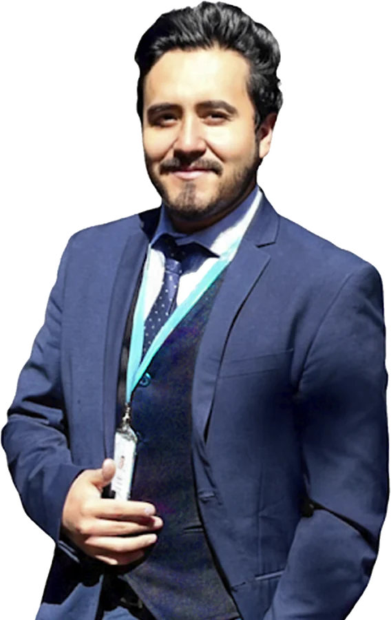

No es una moda. Es la habilidad que diferencia a un profesional ambiental hoy.
Las consultoras, las empresas y las entidades del sector ya usan IA para redactar, analizar y decidir más rápido. Quien la domina, avanza. Quien no, se queda revisando a mano lo que otros terminan en minutos.
Las empresas ya la están pidiendo en sus equipos.
Saber usar IA con criterio técnico es hoy tan importante como saber Excel o AutoCAD hace unos años. En la comunidad la conviertes en una habilidad real, no en un tema del que solo escuchas.
Recupera horas cada semana
Informes, revisiones normativas, tablas de monitoreo, presentaciones. Lo que hoy te toma una tarde, con el flujo correcto toma minutos.
Aprendes haciendo, en comunidad
Nada de cursos grabados que nunca terminas. Cada viernes practicas en vivo, preguntas y compartes con personas que trabajan en lo mismo que tú.
Teoría clara. Práctica real. Un flujo listo para el lunes.
Una sesión en vivo, cada viernes a las 7:00 pm. Sin relleno: entras, aprendes, practicas y te llevas algo que puedes usar al día siguiente.
Entendemos el concepto
Qué es, para qué sirve y cuándo conviene usarlo. Explicado con sencillez, sin tecnicismos innecesarios y sin necesidad de saber programar.
TeoríaLo aplicamos a un caso ambiental
Trabajamos en vivo sobre un caso real del sector: un informe, un estudio, una base de datos de monitoreo, un mapa. Tú lo replicas en simultáneo.
PrácticaTe lo llevas a tu trabajo
Sales con un prompt, una plantilla o un flujo probado, más el espacio del grupo para resolver dudas durante la semana.
AplicaciónSi trabajas o estudias el medio ambiente, esta comunidad es para ti.
Que elaboran o revisan instrumentos de gestión ambiental y quieren entregar mejor y más rápido.
Que trabajan con informes, actas, expedientes y necesitan precisión técnica con menos tiempo.
Que quieren acelerar su investigación, redacción y análisis, y llegar al mercado con una ventaja real.
Que buscan incorporar IA en sus procesos con criterio, sin depender de un experto externo para cada tarea.

Jilder Michael Castillo Cabrera
Formación práctica en gestión, supervisión y fiscalización ambiental, y creador de herramientas con inteligencia artificial para el sector. Lleva la IA al trabajo real del ingeniero ambiental: informes, expedientes, datos y decisiones.
- Experiencia en supervisión y fiscalización ambiental en el Perú.
- Desarrolla apps, flujos y asistentes con IA para equipos ambientales.
- Enseña con casos reales, en un lenguaje claro y aplicable desde el primer día.
“La IA no reemplaza al ingeniero ambiental. Reemplaza al ingeniero que no la usa.”Equilibria · Comunidad de IA
Lo que necesitas saber antes de entrar
¿Tiene algún costo?
¿Necesito saber programar o ser experto en tecnología?
¿Cuándo y dónde son las sesiones?
¿Qué IAs vamos a usar?
¿El grupo me va a llenar de mensajes?
Tu próximo viernes puede cambiar cómo trabajas.
Entra al grupo hoy. Este viernes ya estarás practicando con IA en un caso ambiental real, junto a una comunidad que va por lo mismo que tú.
Gratis·Sin spam·Sales cuando quieras